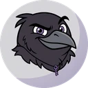
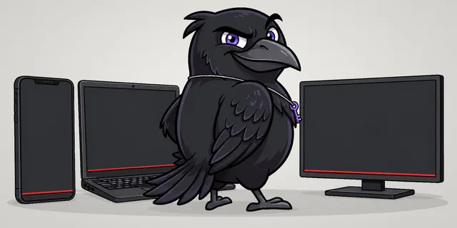

Android
Incy и Happ сами настраивают российские сайты и поддерживаемые приложения.
Добавьте устройство в боте и откройте страницу подключения.
Каждое устройство получает свою ссылку. Приложение и правила настраиваются на странице подключения.


В Happ, Incy и FlClashX сайты из белого списка и поддерживаемые приложения открываются напрямую.
Подписка и исключения добавляются автоматически.
Подписка и исключения добавляются автоматически.
Альтернативный маршрут для Google и YouTube. Только на этом устройстве.
После добавления подписки выберите в приложении «Авто - Обычный VPN». Для сети с белыми списками используйте «Авто - Белые списки».
Рекомендуем Incy и Happ: они сами настраивают российские сайты и белые списки.
Incy и Happ сами настраивают российские сайты и поддерживаемые приложения.
Incy и Happ сами настраивают российские сайты.
Incy и Happ сами добавляют подписку и правила для российских сайтов.
Happ или FlClashX. Добавьте телевизор отдельным устройством в боте.
Android: FlClashX, v2rayNG. iPhone и iPad: Shadowrocket, Karing. Windows: FlClashX, v2rayN, Clash Verge Rev. macOS: FlClashX, Clash Verge Rev, Karing. Linux: FlClashX. Hiddify подходит для обычного VPN.
Один день, 10 ГБ и 2 устройства. Понравится - выберите тариф от 99 ₽/мес в том же боте.
Открыть бота